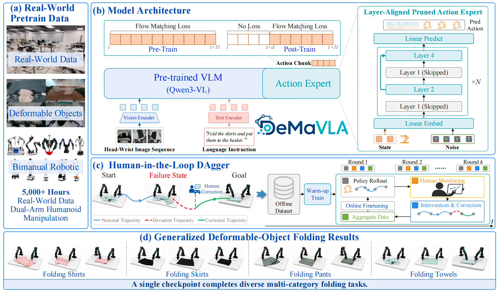
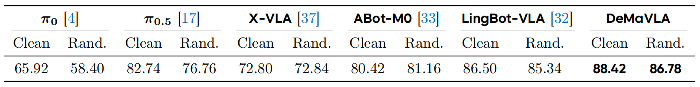
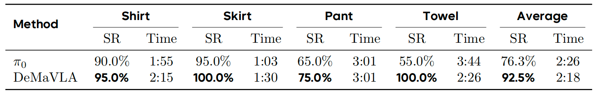

Real-world household robots require Vision-Language-Action (VLA) foundation models that can acquire reusable manipulation skills across diverse objects, task conditions, and household environments. Deformable-object folding is a representative challenge, requiring robots to handle clothing items from random initial states across varying categories, geometries, materials, and scenes. However, existing VLA systems commonly train separate policies for different object categories, while naively mixed multi-task training often suffers from task interference and degraded performance. To move beyond category-specific folding policies, we introduce DeMa-VLA, a VLA foundation model for generalizable Deformable Manipulation. DeMa-VLA adopts a VLM backbone with an action expert and formulates continuous action generation using flow matching. To improve efficiency, the action expert is constructed by pruning every other transformer layer while preserving layer-wise alignment with the VLM backbone, reducing training and inference cost. DeMa-VLA is first pre-trained on approximately 5,000 hours of selected real-world dual-arm demonstrations to acquire general manipulation priors. It is then post-trained on mixed folding data that aggregates self-collected demonstrations and corrective trajectories from real-robot failures across multiple folding tasks through a human-in-the-loop Data Aggregation (DAgger) pipeline. Experiments show that DeMa-VLA achieves competitive performance on RoboTwin and strong real-world results on our household folding benchmark. These results highlight the value of scalable real-world data, efficient action generation, and corrective learning for general-purpose VLA policies in deformable-object manipulation.
DeMaVLA is trained from real-world dual-arm demonstrations and integrates a Qwen3-VL backbone, a layer-aligned pruned action expert, flow-matching action generation, training-time RTC for asynchronous execution, and human-in-the-loop DAgger for corrective real-world learning. A single checkpoint is used to perform diverse multi-category folding tasks.

To comprehensively evaluate DeMaVLA, we conduct experiments on the RoboTwin simulation benchmark, which contains 50 bimanual manipulation tasks under both clean and randomized settings. The clean setting uses fixed initial configurations, while the randomized setting varies object poses and scene layouts. As shown in the following table, DeMaVLA achieves the best average performance under both settings.

We further evaluate DeMaVLA on a real-world household folding benchmark using an ALOHA-style dual-arm robot. The benchmark contains four representative folding tasks: folding a shirt, folding a skirt, folding pants, and folding a towel. As shown in the following table, DeMaVLA achieves a higher average SR than pi0 across the four tasks, improving from 76.3% to 92.5%. These results indicate that DeMaVLA can share folding priors across garment categories and execute them through a single multi-task policy.
